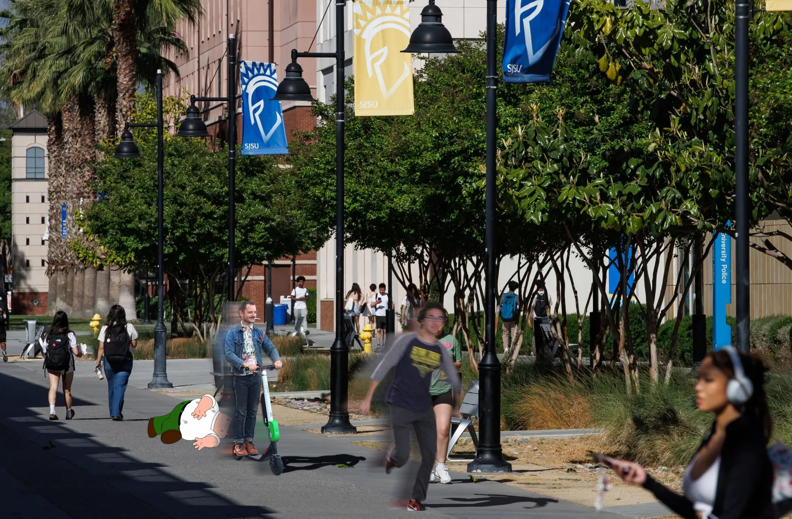
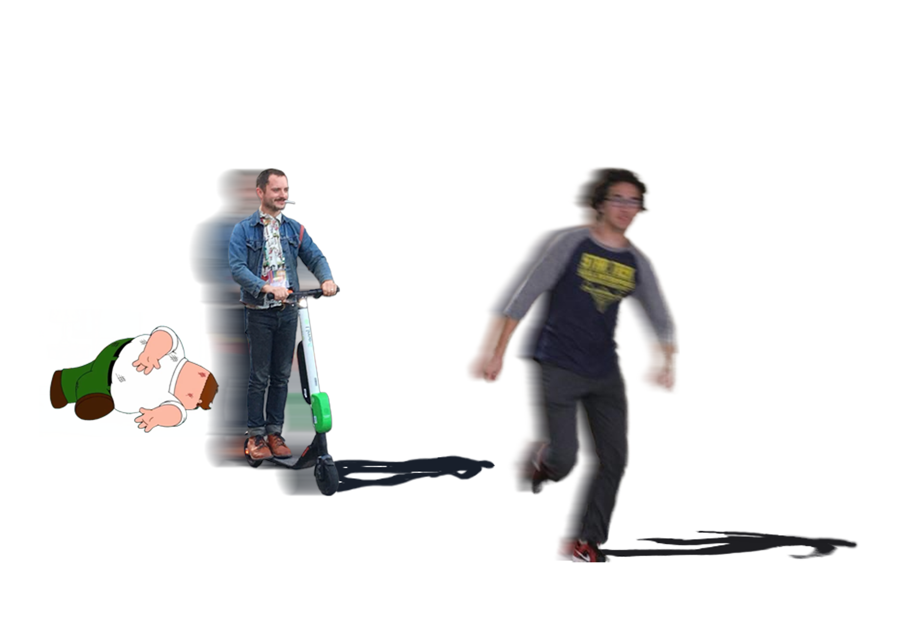

In my meme mashup, I am attempting to convey or encapsulate how threatening electric scooters feel on campus by creating a narrative illustrating a possible outcome. Walking through campus, there has been more than a handful of times were an electric scooter has come too close for comfort. Thus, I wanted to create a meme depicting the intrusive thoughts that go through my head in those moments.

